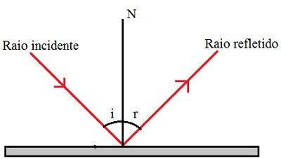
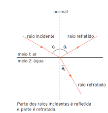

Sumário
Fenômenos Ondulatórios
As ondas, assim como todos os outros elementos da Física, passam por fenômenos em sua propagação. Abaixo, veremos estes eventos:
- Reflexão: é o fenômeno que consiste na luz voltando a se propagar no meio de origem depois de atingir um objeto ou superfície. A onda emitida por um sonar, ao ser refletida por objetos submersos, permite navios e submarinos desviar de obstáculos e localizar navios afundados, cardumes de peixes ou qualquer outro objeto. Ao ser refletida, a onda retorna ao meio de origem.

Na figura acima, temos N como a reta normal, que intermedia o fenômeno. A letra i representa
o ângulo de incidência da onda e, a letra r, seu ângulo de reflexão. Na reflexão, i=r.
-
Refração: é o fenômeno em que a luz é transmitida de um meio para outro diferente,
durante essa mudança a velocidade e o comprimento da onda são alterados. Uma onda sofre
refração quando passa de um meio 1 para uma meio 2, propagando-se inclusive, com outra
velocidade.
Na refração, ocorre: alteração da velocidade de propagação da onda, a frequência f permanece a mesma pois ela é uma característica da fonte, alteração do comprimento de onda, e dependendo do ângulo de incidência, pode ocorrer ou não a mudança na direção da propagação.

Nesta imagem, temos os dois fenômenos citados em apenas um gráfico, e dois
exemplos de meios que as ondas podem se propagar.
Equação que descreve a refração
Considerando θi o ângulo de incidência, θrr o ângulo de refração, V1 a velocidade do meio 1, V2
a velocidade do meio 2, λ1 o comprimento de onda 1, λ2 o comprimento de onda 2, temos:
Assista agora um vídeo que descreve os fenômenos da reflexão e da refração:
- Difração: é a capacidade de uma onda ultrapassar obstáculos quando existe uma abertura de dimensões comparáveis ao seu comprimento. Ao tocar um rádio em uma sala, um indivíduo que estiver na sala ao lado também consegue escutá-lo. Isto ocorre pois na difração a onda conseguem contornar estes obstáculos.
Abaixo, um vídeo que descreve este fenômeno:
- Interferência: quando duas ondas ou mais chegam ao mesmo tempo a um ponto em comum, então eles se superpõem naquele ponto. A interferência pode ser construtiva ou destrutiva. A construtiva é quando uma onda se soma à outra e o resultado é uma única onda em que a amplitude é a soma das duas amplitudes, e a destrutiva é quando uma onda anula a outra, não gerando nenhuma onda.
Abaixo, um vídeo que descreve este fenômeno:
- Efeito Doppler: é um fenômeno ondulatório que ocorre quando um observador se aproxima ou se afasta de uma fonte de ondas. Ele é caracterizado pela mudança do comprimento ou da frequência de onda. Para isso, caracterizam-se a fonte sonora, o meio onde ela se propaga e o observador que está detectando as ondas. No efeito Doppler, a frequência pode ser calculada de acordo com as condições da fonte que emite as ondas e o observador com a seguinte relação:
Observações: o v sem a letra o ou a letra F representa a velocidade do som, que é de 340 m/s;
A letra "o" corresponde ao observador, logo, uma das parcelas do numerador representa a velocidade deste.
Quando ele estiver se aproximando, a velocidade do observador irá somar com a velocidade do com.
Se ele estiver se afastando, o numerador será a diferença entre a velocidade do som e a do
observador. Caso ele esteja em repouso, sua velocidade será de 0 m/s;
F corresponde à fonte, logo, uma das parcelas do denominador representa a velocidade desta. Quando
ela estiver se aproximando, será subtraída da velocidade do som a velocidade da fonte. Caso ela
esteja se afastando, o denominador será a soma da velocidade do som com a velocidade da fonte.
Se a fonte estiver em repouso, a velocidade dela será de 0 m/s.
Agora, observe um exemplo de como funciona o efeito Doppler:
- Ressonância: é um fenômeno que ocorre quando uma força é aplicada sobre um sistema e essa força tem a frequência parecida ou próxima à do sistema. Abaixo, temos a representação deste fenômeno:
| Eliana tentando quebrar uma taça de vidro com a voz Imagem retirada do Google |
|---|
Já ouviu falar do desafio de quebrar a taça no grito? Sim, existe Física por trás dele! E está justamente relacionado com o fenômeno da ressonância. Nele, as ondas sonoras fazem com que aumente a quantidade de energia fornecida à taça, até que em um determinado momento ela não suporte mais o aumento de sua amplitude e acaba se rompendo.
RESUMÃO
Chegou a hora de fazer o Resumão! Para isso, aqui vão algumas dicas para você fazer o seu de forma completa e saber tudo sobre os fenômenos ondulatórios:
- Em uma onda, podem acontecer mais de um fenômeno. Logo, é interessante tentar relacioná-los, como no gráfico que apresenta a reflexão e a refração.
- A possibilidade de duas pessoas conversarem, mesmo existindo uma parede de concreto de 3m de altura entre elas é um evento onde as ondas sonoras contornam a parede, ocorrendo a difração.
- Ondas em uma mesma corda que possui diversas espessuras alteram a sua velocidade devido ao fenômeno da refração.
- Ao tocar as cordas de um violão, a vidraça em que ele se encontra começa a vibrar com a mesma frequência. Este é o fenômeno da ressonância.
- Um site é uma maneira muito organizada de apresentar e visualizar todas as informações. Que tal iniciar o desenvolvimento de um site para observar os conteúdos de Física? Neste link está o site que é o nosso resumão de hoje sobre os fenômenos ondulatórios.
Refêrencias
Vídeo Youtube - Simulação Difração por fenda Única
Vídeo Youtube - Interferência destrutiva e construtiva
Vídeo Youtube - Efeito Doppler
Vídeo Youtube - Ressonância Acústica